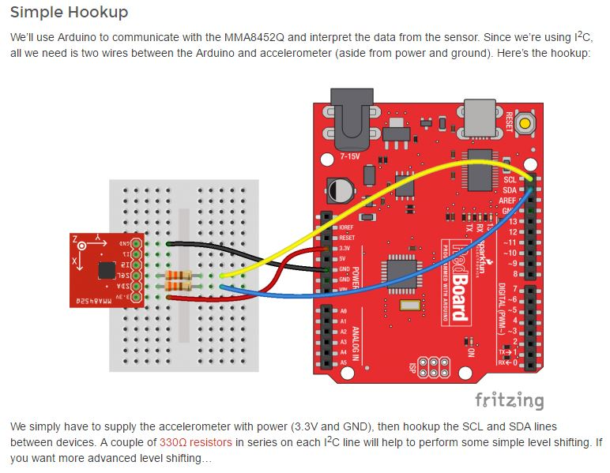

(step1) Prototyping MMA8452

link: mma8452q sparkfun guide
(step2) Prototyping dual MMA8452
Stronger 3.3v pullUp design / Dual mma8452
link: I2C bi-directional level shifter
You have to solder/shortcut SA0 on ONE of your mma8452 in order to prevent I2C adress conflict.
(See "Address Select Jumper" here)
.